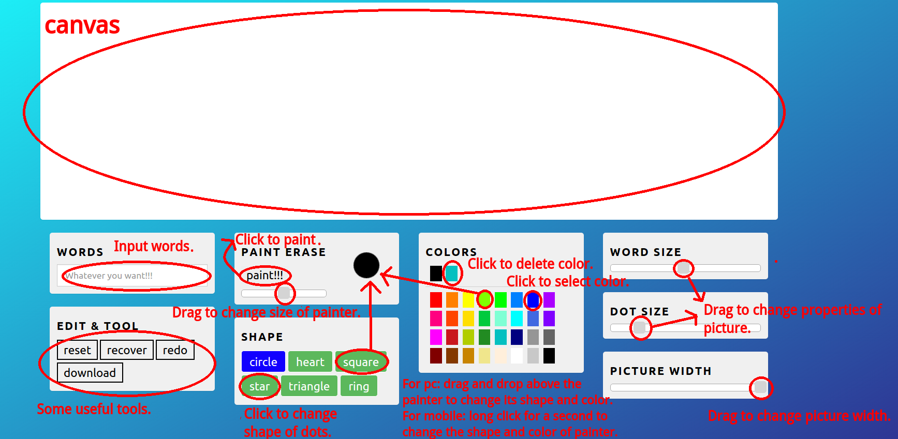
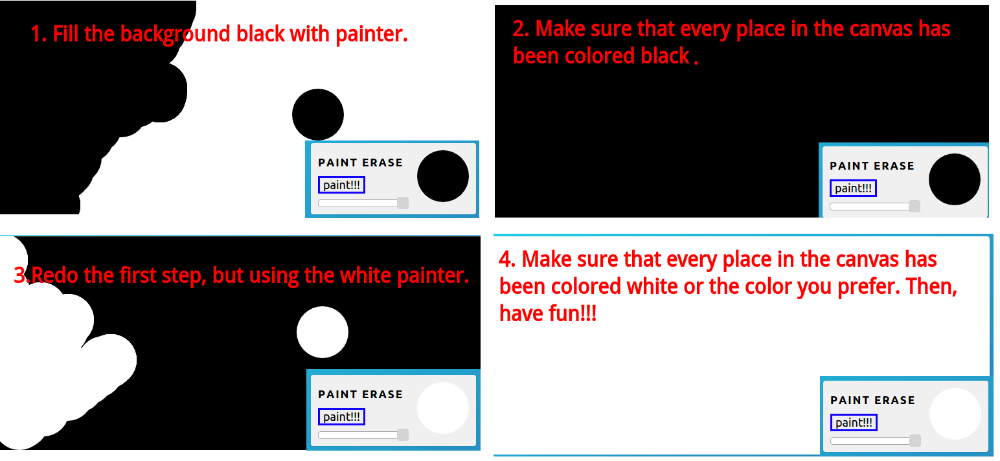

Sorry, We're struggling to make this page look better QAQ.
Before then, we'll use few pictures and words instead.

Dottarry provides .png and .jpeg for you to download, but we suggest you download with .png because of its quality. Since the initial background of .png is transparent, if you want to turn your background into white or other colors, you may do these steps before you start your drawing.

We suggest you using Chrome, Firefox and Opera to make your own Dottarries. Also, please enable javascript in the browser settings so that Dottary can work regularly.